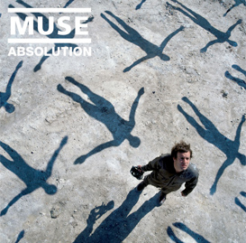

Muse - Absolution
Absolution é o terceiro álbum de estúdio da banda inglesa de rock alternativo Muse. O disco foi liberado em 21 de setembro de 2003 na Inglaterra em em 23 de março de 2004 nos EUA. Este álbum lançou os dois primeiros grandes sucessos do Muse na América, com os singles "Time Is Running Out" e "Hysteria", sendo que este último ocupou uma posição entre o Top 10 da UK Charts. Em 2006, "Absolution" foi votado como o 21º melhor álbum inglês da história.
Gravação
A banda passou quase todo o ano de 2002 gravando Absolution com o produtor Rich Costey.[2] O álbum foi gravado em estúdios em Los Angeles e em Londres.[2] Bellamy disse que a banda tomou uma "decisão consciente" de "se reunir e fazer música", separando tempo para a gravação e composição, já que a gravação dos outros álbuns foi feita sobre pressão e com um cronograma apertado.[2]
O álbum fala sobre medo, falta de confiança, conquistas pessoais e alegria.[2] Bellamy disse que o começo da Guerra do Iraque teve um efeito na compisição das letras.[2]
A faixa "Blackout" tem uma orquestra de 18-peças na melodia.[3]
Recepção
Absolution foi o primeiro álbum do Muse a alcançar sucesso nas paradas americanas e acabou por tornar a banda popular nos EUA.[2] O disco chegou a ficar no #1 lugar na Top Heatseekers da Billboard e em #107 na Billboard 200.[4]
Criticas
O álbum foi bem recebido pelos críticos. Tanto a revista Q e o jornal The Guardian deram excelentes pareceres sobre o CD, sendo que a Allmusic e a Rolling Stone deram três estrelas ao disco. O estilo deste álbum foi comparado aos do Radiohead, como Tim DiGravina do Allmusic disse que o vocal de Bellamy parece uma "versão de Thom Yorke".[5] Contudo, DiGravina também disse que o álbum consegue impressionar os fãs da banda que são 'mais chegados em um roque alternativo mais pesado', uma visão compartilhada pelo critico do The Guardian, Alexis Petridis.[6]
Recentemente, a revista britânica NME colocou o álbum na 49ª posição na lista do "Top 100 Greatest Albums of the Decade".
Faixas
Todas as letras escritas por Matthew Bellamy, todas as músicas compostas por Muse.